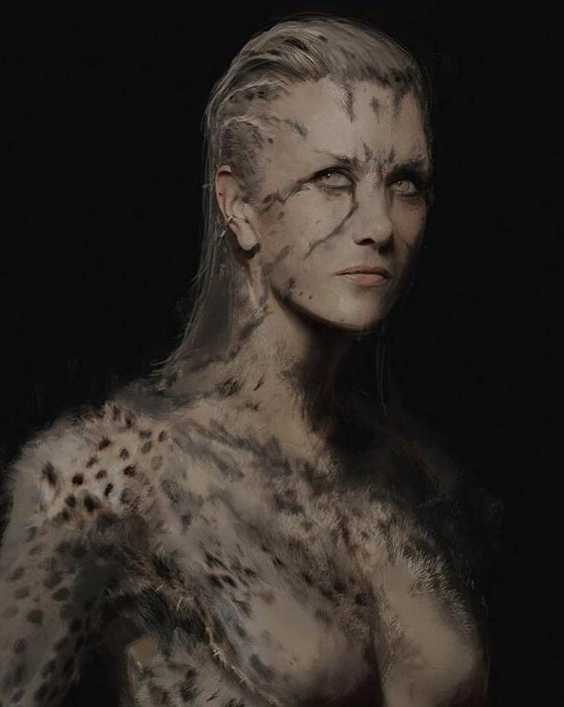

MULHER-LEOPARDO
Cheetah (tradução literal, Guepardo ou Chita) também conhecida pela tradução errônea Mulher-Leopardo é uma super-vilã fictícia dos quadrinhos da DC Comics. Ela é bem conhecida por ser uma das maiores e mais antigas arqui-inimiga da Mulher-Maravilha. Ao longo dos anos houve três diferentes mulheres e uma versão masculina de Cheetah. A atual é Barbara Minerva. Criada por William Moulton Marston (também criador da Mulher Maravilha) e H. G. Peter, a personagem deveria representar a loucura da inveja e outras emoções ruins. Desde então, a personagem passou por diversas mudanças. Nos quadrinhos, houve quatro diferentes Leopardos antes dos “Novos 52”: Priscilla Rich e Deborah Domaine, durante a época de ouro e prata; Barbara Ann Minerva, após a Crise das Infinitas Terras, e Sebastian Ballesteros, um homem que conseguiu o poder do leopardo. A principal é Barbara Ann Minerva, a Chita principal, criada por Len Wein e George Pérez em Mulher Maravilha vol.2 #07, em agosto de 1987. Seu nome original em inglês é Cheetah, cuja tradução é Guepardo ou Chita, e no passado, nas edições brasileiras e na televisão, no antigo desenho animado "Super-Amigos", seu nome não era traduzido, mas de alguns anos para cá os editores brasileiros resolveram batizá-la em português como Mulher-Leopardo.